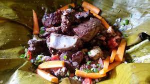

Beef Luwombo Recipe

Desciption
How to Cook Meat Stew in Uganda
Ingredients
- 500 gm beef/meat
- I big onion
- 2 big tomatoes
- 2 cloves of garlic
- 1 spring of coatmeal
- 1 carrot (Optional)
- 1 medium green pepper
- 2 stock cubes (seasoning cubes/meat cubes)
- Add salt and pepper to taste
Steps Followed
- Smoke the meat/beef
- Cut into pieces or use un-smoked beef.
- Chop all ingredients
- Place half of the meat in Luwombo leaf and put in half of the ingredients,
place remaining beef and lastly chopped ingredients.
- Add the salt and other spices
- Pour some little water or stock.
- Cover meat/beef with a small piece of luwombo leaf.
- Wrap and tie with a banana fiber.
- Place in a prepared steaming source-pan:
- Cut small pieces of banana leaf stock
- Place in a sauce-pan
- Cover with a banana leaf
- Pour boiling water
- Place the meat in Luwombo in the sauce-pan and cover it with at least two banana
leaves nicely in order to conserve all the steam then cover on top with another
sauce-pan.
- Put to steam on any source of heat like Charcoal,firewood
,gas or electricity e.t.c
- Cook for about 1 to 1 & 1/2 hrs
- When ready serve in a basket lined with steamed banana leaf and remove the
banana fiber used for fastening, but do not open it.